1. (算法设计题)
已知一棵二叉树按顺序方式存储在数组 a[1..n] 中。设计一个算法，求编号分别为 i 和 j 的两个结点的最近公共祖先结点的值。
函数原型如下：
ElemType ancestor（int a[ ]，int i , int j ） ;
正确答案：
ElemType ancestor（int a[ ]，int i , int j ）
{
int p = i , q = j ;
while( p!=q )
{
if( p>q )
p = p / 2 ;
else
q= q / 2 ;
}
return a[p] ;
}
2. (算法设计题)
假设二叉树中每个结点值为单个字符， 采用二叉链表存储结构存储， 是设计一个算法，采用后续遍历方式求一棵二叉树b中所有小于 x 的结点个数。
二叉存储结构结点类型如下：
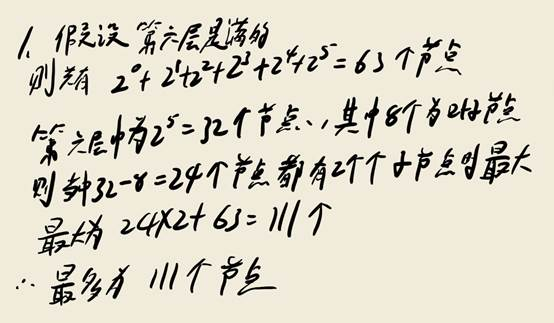
求二叉树 t 中所有小于 x 的结点个数函数原型如下：
int lessNodes( BTNode * t , char x ) ;
正确答案：
xxxxxxxxxxint lessNodes( BTNode * t , char x )
{
int num1,num2, num=0 ;
if( t = NULL )
return 0;
else
{
num1 = lessNodes( b->lchild , x ); //递归调用求左子树小于x结点的个数
num2 = lessNodes( b->2child , x ); //递归调用求右子树小于x结点的个数
num = num1 + num2 ;
if( t->data < x)
num++ ;
return num ;
}
}
3. (算法设计题)
假设带权有向图G采用邻接表存储。设计算法：采用头插法增加一条边<i , j>，其权值为w。注：假设顶点 i，j 存在，原来图中不存在<i , j>边。
已知图的邻接表边结点、头结点和邻接表类型如下：


增加一条边的算法函数原型如下：
void addEdge(ALGraph *&al , int i , int j , int w);
正确答案：
void addEdge(ALGraph *&al , int i , int j , int w)
{
ArcNode *s;
s=new ArcNode;
s->weight = w; s->adjvex = j; //填写权重以及填写i邻接顶点
s->nextarc= al->adjlist[i].firstarc ; al->adjlist[i].firstarc = s ; //首尾相接插入结点s
al->e ++ ; //增加一条边
}
4. (算法设计题)
假设图采用邻接表存储，设计算法判断顶点 i 和顶点 j (i ≠ j ) 之间是否有路径 。
调用dsf判断是否有边代码如下：
int visited[MAX] ;
bool dfsTrave( ALGraph *al ,int i , int j )
{
int k ;
dfs( al, i ) ; //调用dfs算法相当于设置所有与顶点i 相通v数组中对应元素值为1 ；
if(visited[j] == 0)
return false ;
else
return true ;
}
dfs算法的函数原型如下：
void dfs ( ALGraph *al ，int v) ；
请编写dfs算法。
正确答案：
void dfs ( ALGraph *al ，int v)
{
ArcNode *p；
visited[v] = 1; //设置访问过
p=al->adjlist[v].firstarc ; //1 初始化
while( p != NULL) //2 终止条件
{
• if(visited[ p->adjvex] = = 0 )
• dfs(al, p->adjvex ) ;
• p = p->nextarc ; //3 循环变量修改
}
}
5. (算法设计题)
给定n个村庄之间的交通图。若村庄 i 与村庄 j 之间有路可通， 则将顶点 i 与顶点 j 之间用边连接 ，边上的权值 wij表示这条道路的长度。现打算在这n个村庄中选定一个村庄建一所医院 ， 请完善下面的算法求出医院应建在哪个村庄才能使距离医院最远的村庄到医院的路最短。
邻接矩阵类型定义如下：

部分源码如下：
int Floyd( MGraph mg)
{
int A[MAXV][MAXV] ;
int s, min=1<<10;
for(int i=0; i < mg.n ; i ++)
• for(int j=0 ; j< mg.n ; j++)
• A[i][j]=mg.edges[i][j]; // 初始化A[i][j] 为 村庄 i 到村庄 j的边上的权值
//求解村庄 i 到村庄 j 的最短路径
//以下算法是把所有村庄遍历一次，逐一求到达村庄的最远距离中找个最短的
int k= -1;
for(int i=0 ; i<mg.n ;i++)
{
• int s=0;
• for( int j = 0 ; j <mg.n ; j++)
• if( A[j][i])>s )
• s = A[j][i] ;
• if( s<min )
• {
• k=i ; min =s ;
• }
}
return k ;
}
正确答案：
for(int k=0 ; k<mg.n ; k++)
for(int i=0; i <mg.n ; i++ )
• for(int j=0; j< mg.n ;j++)
• if(A[i][k]+A[k][j] < A[i][j] )
• A[i][j] = A[i][k]+A[k][j] ;
6. (算法设计题)
设计算法利用折半查找算法在一个有序表 R 中插入一个关键字为 k 的元素 x ，并保持表的有序性。
查找表顺序类型定义如下：

请完善在查找表中添加 x 元素的函数 bInsert 。
void bInsert( SeqList R , int &n ， NodeType x )
{
• int low = 0, high = n-1 , mid , pos , i ;
• bool find = false ;
• while( low <= high && ! find )
• {
• //补充查找算法，
• }
• if( find ) //找到相同关键字的元素
• pos = mid ; // 在mid处插入元素
• else
• pos = high+1 //在该high+1出插入
• for( i = n-1 ; i >= pos ; i-- )
• R[i+1] = R[i] ;
• R[pos] = x ;
• n++ ;
}
正确答案：
mid = ( low+high) /2 ;
if( x.key <R[mid].key )
• high=mid-1 ;
else if ( x.key > R[mid].key )
• low=mid+1 ;
else
• { i = mid ; find = true ; }
7. (算法设计题)
有一个含有n个整数元素数组a[0...n-1] ，设计一个算法求其中最后一个最小元素的下标。
已知，求其中最后一个最小元素的下标函数原型：
void findMin( int a[] , int n , int &min )；
正确答案：
void findMin( int a[] , int n , int &mini )
{
for( int i = 1 ; i<n ; i++ )
• if( a[i] <= a[mini] )
• mini = i;
}
8. (算法设计题)
假设二叉树中每个结点值为单个字符（所有结点值不相同），采用二叉存储结构存储。现有一个算法DestroyBTree(b)用于删除并释放以b为根结点的子树，要求设计一个算法利用它删除二叉树 b 中以结点值 x 为根结点的子树。
已知
- 二叉树结点类型如下：
- 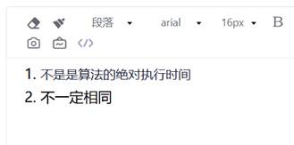
\2. 删除二叉树 b 中以结点值 x 为根结点的子树的函数原型如下：
void delx( BTNode *&t , char x ) ；
正确答案：
void delx( BTNode *&t , char x )
{
if( t != NULL )
{
• if( t->data == x)
• { destroyBTree(t) ; //调用算法删除以结点值为x的所有子树
• t=NULL ;
• }
• else
• { delx( b->lchild ,x ) ; //在左子树查找结点为x的子树，并删除
• delx( b->rchild ,x ) ; //在右子树查找结点为x的子树，并删除
• }
• }
}一. 简答题（共17题，54.4分）
1. (简答题) 已知一棵完全二叉树的第6层（设根为第1层）有8个叶子结点，则该完全二叉树的结点个数最多是多少？请写出推导过程。
xxxxxxxxxx//假设第六层是满的，共有65各节点，第六层有32个节点，其中有8个叶子节点有48+63=111
\2. (简答题) 有n个不同的英文单词（均为小写字母），它们的长度相等，均为m。若n=500，m<5，试问采用什么排序方法时其时间复杂度最小？为什么？
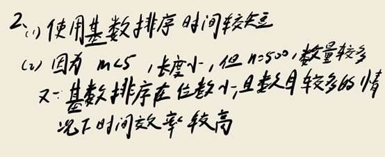
\3. (简答题)
以下为链栈的进栈操作，请完善相关代码。
void push(LinkStack *&stack，ElemType e)
{ LinkStack *p;
s=(LinkStack *)malloc(sizeof(LinkStack));
____; //新建元素e存储到结点p指向的成员data中
____; //插入结点头插法插入到头结点后面
stack->next=s;
}
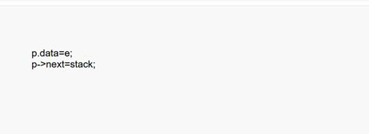
\4. (简答题) 请简述迪克斯拉算法思想
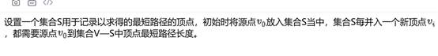
\5. (简答题) 算法的时间复杂度反映的是算法的绝对执行时间吗？两个时间复杂度都为O（n^2）算法。对于相同问题规模n，它们的绝对执行时间一定相同吗？
\6. (简答题) 给定权的集合w={15,3,14,2,6,9,16,17}，画出相应的哈夫曼树，并计算带权路径长度。
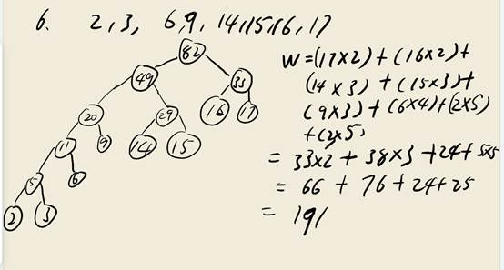
\7. (简答题)
求算法时间复杂度：
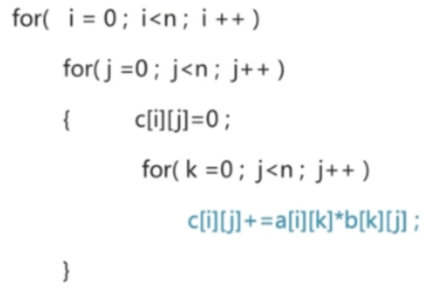
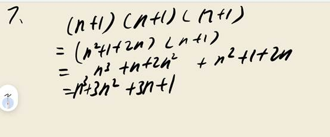
\8. (简答题)
假设顺序表的定义如书本上的定义，试写出插入操作的实现
void InsertList(SqList *L,int i,int e)//在L表中的第i个位置插入元素e;
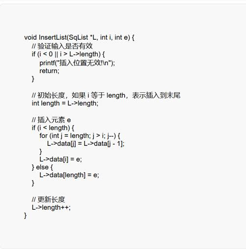
\9. (简答题)
简述一下算法的功能（栈的元素类型为int）
void fun(SqStack *&s)
{
int i,j=0,a[MAXSIZE];
while(!isEmpty(s))
{
pop(s,a[i]);
j++;
}
for(i=0;i<j;i++)
push(s,a[i]);
}
\10. (简答题) 具有3个结点的树和具有3个结点的二叉树的形态各有几种？请分别画出。
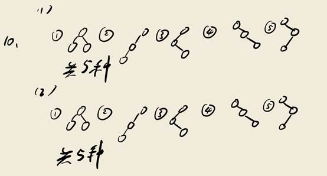
\11. (简答题)
算法fun的功能是借助栈结构实现十进制转化为八进制，阅读如下代码回答问题，
十进制1697转化为八进制栈中变化情况是怎样的。
void fun(int n)
{
int e; SqStack s;
SqStack(s);
while(n!=0)
{
push(s,n%8);
n=n/8;
}
while( ! isEmpty(s))
{
pop(s,e);
printf("%1d",e);
}
printf("\n");}
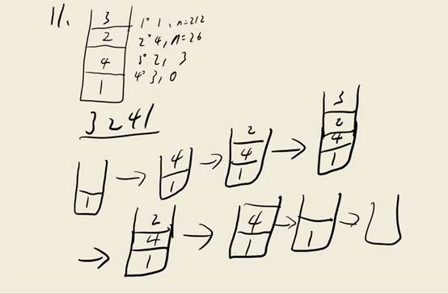
\12. (简答题)
已知：
S="a b a b c a b a a b c a a b a a b a b c a a b"，T="a b a a b a b c"
求模式T的next[j]，写出KMP匹配过程。

\13. (简答题)
通过一趟遍历在顺序表L中找出最大元素并返回其位置。
int PosOfMax(SqList *L)
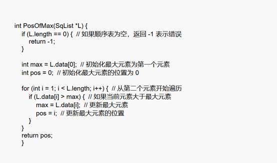
\14. (简答题) 某二叉树结点的中序序列为ABCDEFG，后序序列为BDCAFGE，请（1）构造该二叉树；（2）写出其先序序列，画出先序线索二叉树；（3）还原成森林。
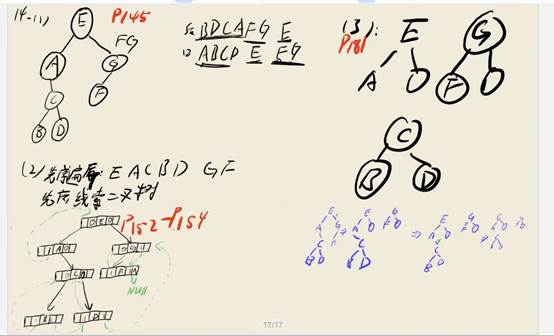
\15. (简答题) 简单选择排序的基本思想是什么？其在平均情况、最坏情况、以及最好情况下的时间复杂度分别为多少？
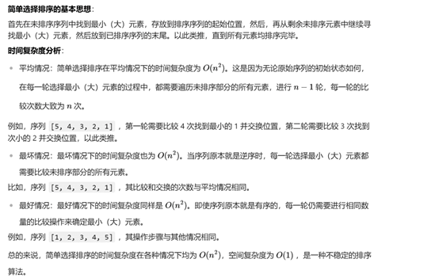
\16. (简答题)
如图所示联通网络，分别用prim和kruskal算法构造最小生成树，写出构造过程。
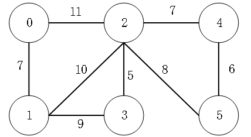
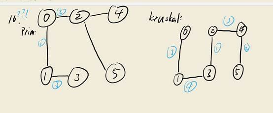
\17. (简答题)
一种数据tree=（D,R）,其中：
D={03,06, 09,11,13}
R={r}
r={<03,06>,<03,09>,<06,11>,<09,13>}
请问是哪种类型的数据结构，并画出数据结构类型？
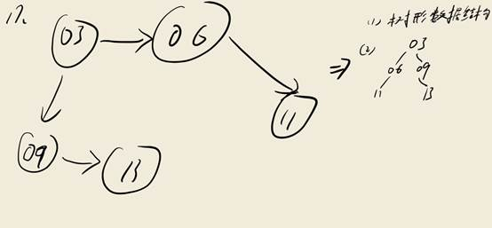
二. 构造题（共14题，45.6分）
18. (构造题)
假定对有序表：（3，4，5，7，24，30，42，54，63，72，87，95）进行折半查找，试回答下列问题：
① 画出描述折半查找过程的判定树；
② 若查找元素54，需依次与哪些元素比较？
③ 若查找元素90，需依次与哪些元素比较？
④ 假定每个元素的查找概率相等，求查找成功时的平均查找长度。
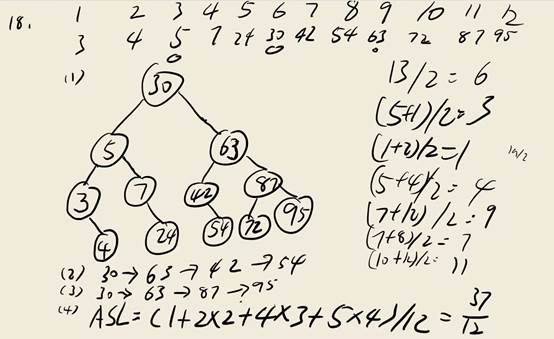
\19. (构造题) 给定5个字符a~f，它们的权值集合W={2,3,4,7,8,9}，试构造关于W的一棵哈夫曼树，求其带权路径长度WPL和各个字符的哈夫曼树编码。
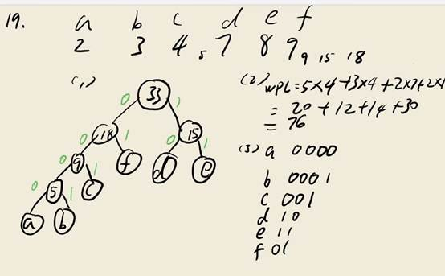
\21. (构造题) 以关键字序列（15,18,29,12,35,32,27,23,10,20）为例，写出执行希尔排序算法的各趟排序结束时关键字序列的状态。
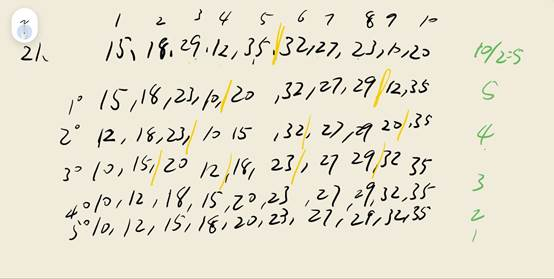
\22. (构造题)
设哈希表的地址范围为0～17，哈希函数为：H（key）=key%16。用线性探测法处理冲突，输入关键字序列：（10，24，32，17，31，30，46，47，40，63，49），构造哈希表，试回答下列问题：
① 画出哈希表的示意图；
② 若查找关键字63，需要依次与哪些关键字进行比较？
③ 若查找关键字60，需要依次与哪些关键字比较？
④ 假定每个关键字的查找概率相等，求查找成功时的平均查找长度。
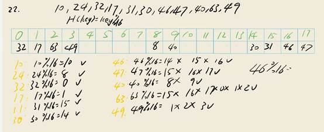
\23. (构造题)
设有一组关键字(19,1 ,23,14,55 , 20,84,27,68,11,10,77),其哈希函数为h(key)=key%13。采用开放地址法的线性探测法解决冲突,
(1) 试在0~14的哈希表中对该关键字序列构造哈希表;
(2) 求在成功情况下的平均查找长度;
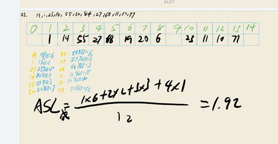
\24. (构造题)
已知关键字序列(12,5,16,2,8,15,18,6,10,20)，按此顺序插入一棵初始为空的二叉排序树中，
(1) 画出该二叉排序树。
(2) 求在等概率下的查找成功的平均查找长度。
(3）求在等概率下的查找不成功的平均查找长度。
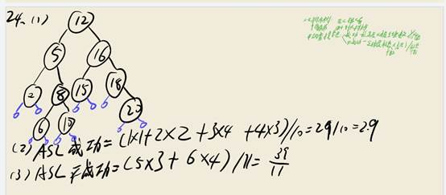
\25. (构造题)
设哈希函数H（K）=3 K mod 11，哈希地址空间为0～10，对关键字序列（32，13，49，24，38，21，4，12），按下述两种解决冲突的方法构造哈希表，并分别求出等概率下查找成功时和查找失败时的平均查找长度ASLsucc和ASLunsucc。
① 线性探测法；
② 链地址法。
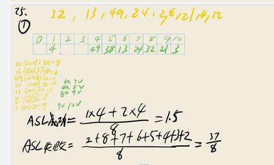
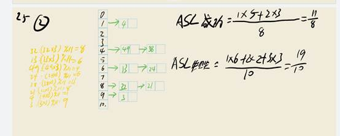
\26. (构造题)
给定5个字符a~f，它们的权值集合W={2,3,5,7,18,14}，求：
(1)构造关于W的一棵哈夫曼树
(2并求其带权路径长度WPL
(3)各个字符的哈夫曼树编码。
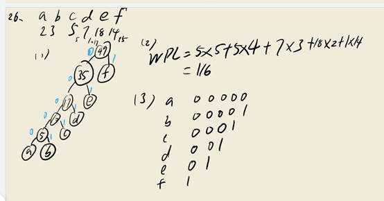
\27. (构造题)
用关键字序列{7,8,30,11,18,9,14}构造一个哈希表，哈希表的存储空间是一个下标从0开始的一维数组，哈希函数为H(key)=(key×3) mod 7，处理冲突采用线性探测法，要求装填因子为0.7。
(1) 画出所构造的哈希表。
(2) 求在等概率下的查找成功的平均查找长度。
(3）求在等概率下的查找不成功的平均查找长度。
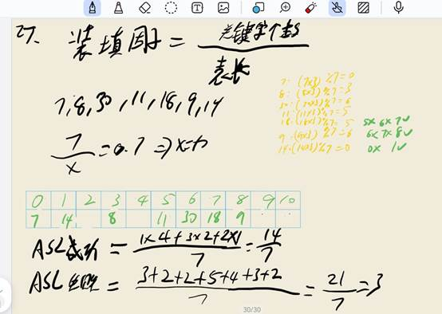
\28. (构造题) 以关键字序列(15,18,29,12,35,32 ,27,23,10,20)为例,分别写出执行直接插人排序算法的各趟排序结束时关键字序列的状态。
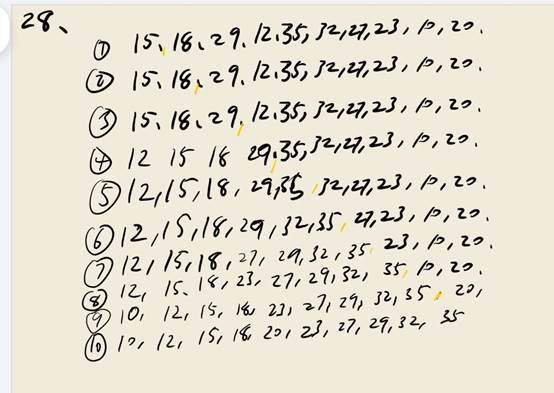
\29. (构造题)
已知带权连通图G=(V,E)的邻接表如下图所示，其中边节点的3个域名分别为：顶点编号、边上的权、指向下一边的指针。
(1) 画出该图的逻辑结构。
(2) 基于上述邻接表，给出以顶点1为初始点的深度优先遍历序列。
(3) 基于上述邻接表，给出以顶点1为初始点的广度优先遍历序列。
(4) 采用普里姆算法(从顶点0出发)或克鲁斯卡尔算法，画出该图的一个最小生成树。
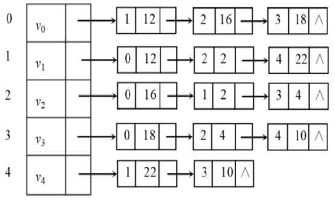
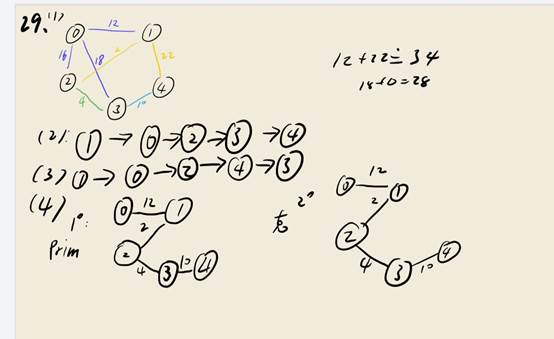
\30. (构造题) 在一棵空的二叉排序树中依次插入关键字序列为12，7，17，11，16，2，13，9，21，4，请画出所得到的二叉排序树。
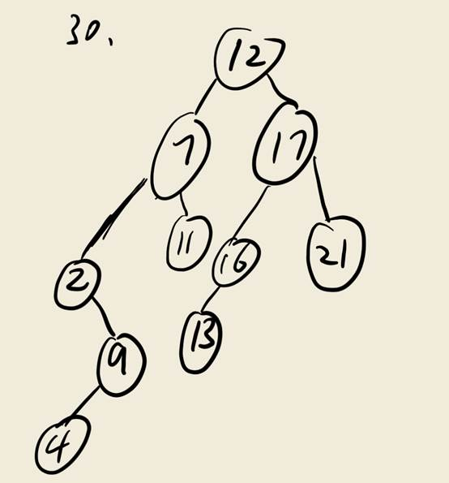
\31. (构造题)
对于11个关键字为（12,18,24,35,47,50,62,83,90,115,134）的有序表，请回答如下问题：
（1）画出含有11个结点的判定树。
（2）求折半查找法时成功和不成功的平均查找长度。
（3）当用折半查找法查找90时需要进行多少次查找可确定成功。
（4）查找47时需要进行多少次查找可确定成功？
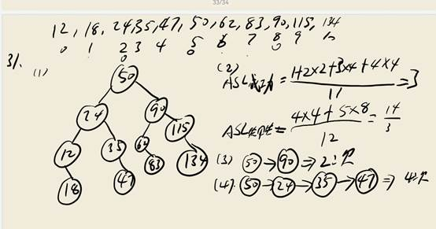